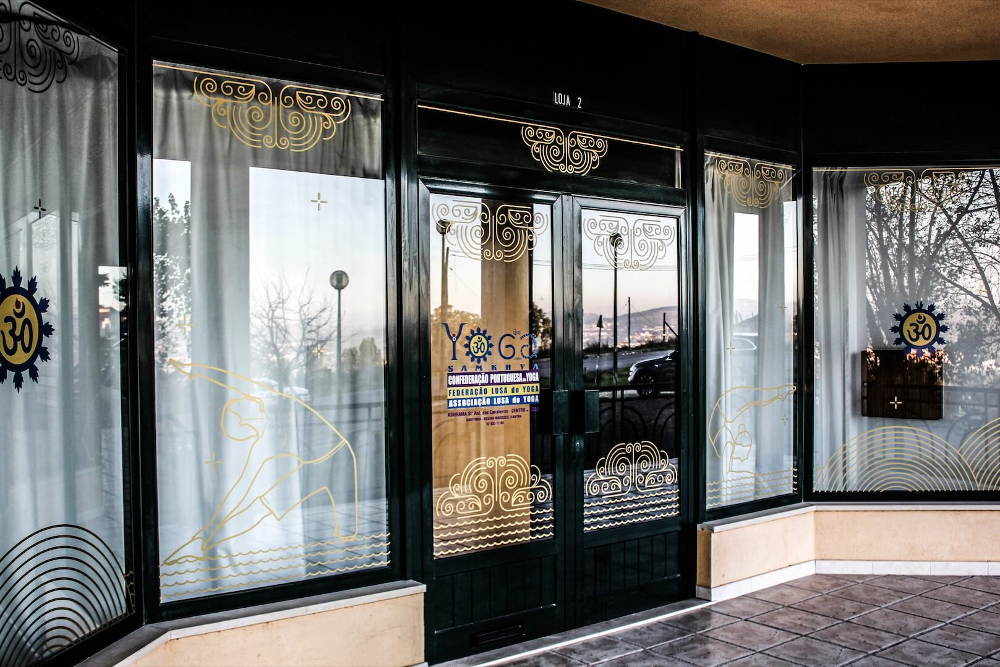

O nosso ashrama nasceu a 13 de março de 2013, com a missão de partilhar o Yoga na sua essência mais pura e ancestral. Desde então, temos vindo a crescer de forma orgânica, sustentados por uma base sólida de conhecimento, dedicação e espírito de família.
Somos uma equipa de três professores unidos não só pela prática, mas também por laços familiares profundos: Regina Marques, diretora do ashrama; Inês Xavier, sua filha; e Gonçalo Brás, que integra esta família e este caminho de vida.
Praticamos Yoga há muitos anos, seguindo uma tradição ancestral da Índia com cerca de 12 mil anos de existência. Este conhecimento foi-nos transmitido pelos nossos queridos mestre e mestra, a quem honramos ao continuar esta linhagem com respeito e dedicação.
Ao longo dos anos, temos tido o privilégio de receber diversos alunos, criando uma comunidade que cresce em consciência, equilíbrio e bem-estar.
Mais do que um espaço de prática, somos um espaço de partilha, crescimento e conexão.